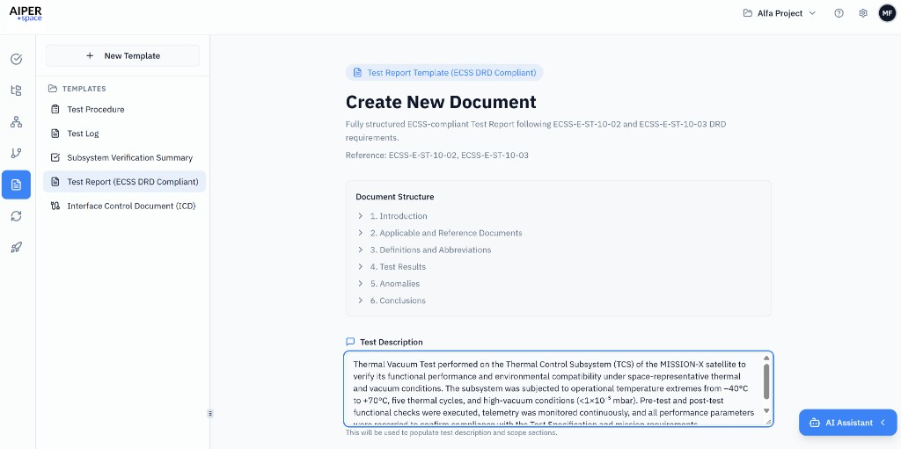

Build satellites.
Not paperwork.
Generate structured engineering documentation with engineer-reviewed, human-in-the-loop workflows. Produce technical documents, traceability records, and controlled revisions in one workspace.
12-week pilot · No rip-and-replace · Cloud / VPC / on‑prem options
Built for satellite SE & AIT documentation
Structured exports · Traceability artifacts · Human review and sign‑off
When documentation becomes the bottleneck
Fragmented tools and manual handoffs slow delivery and add risk. Engineering time goes into rework and chasing evidence, not into the mission.
Documentation bottlenecks
Weeks on EIDP compilation and compliance docs instead of engineering. Last-minute scrambles before delivery.
Broken traceability
Requirements and test results live in different systems. Links break, evidence is scattered, audits take longer.
Approval churn
Review loops, change logs, and version ping-pong. Release delayed by process, not by hardware.
Fragmented workflows
No single source of truth across design, verification, and release. Re-keying data, duplicate spreadsheets, tribal knowledge in people’s heads.
Pilot success criteria (typical targets)
12-week, scoped evaluations on real baselines. We measure engineering time recovered, EIDP time, and adoption—with human sign-off at every step.
Targets vary by baseline maturity and scope.
Engineer more. Document less.
Structure engineering documentation, maintain traceability, and generate technical reports faster—without manual document maintenance.
Increase engineering productivity
Reduce manual document preparation and repetitive editing. Centralize technical documentation so engineers spend more time on engineering and less on document management.
Document traceability
Track document revisions and changes across the project. Version history shows who edited what and when, enabling clear review and controlled document evolution.
Structured ECSS-style documentation
Generate engineering documents using structured templates commonly used in space programs. Support preparation of documentation packages and technical reports with controlled exports.
One workspace for documentation, traceability, and compliance
Structured templates, controlled generation, and exportable evidence—so SE and AIT teams spend less time on paperwork and more on the mission.
Click any step to view larger.

Core capabilities
AI-assisted engineering documentation and traceability. Generate draft technical documents, track document revisions, synchronize updates across files, and compare changes between versions.
AI engineering document generation
Generate engineering documentation using ECSS-aligned templates. Provide structured inputs (e.g. test description, procedure scope) and the system produces draft technical documents such as test reports, procedures, and verification summaries.
Component compatibility analysis
Evaluate technical compatibility between spacecraft components using electrical, mechanical, and operational parameters. Highlight interface conflicts and suggest alternative components based on input constraints.
Document traceability & version control
Track who changed what and when across engineering documents. Maintain full version history and allow engineers to compare revisions and inspect document evolution across the project.
Global document synchronization
Update parameters, numbers, or text across multiple documents simultaneously. Changes propagate across related documents and engineers approve updates before finalizing the revision.
AI-assisted change log generation
Automatically generate change summaries between document revisions. Compare approved and pending versions to produce structured change logs for engineering review and approval.
Toolchain integration
Planned integrations with requirements, design, and test management tools to synchronize engineering data across existing toolchains.
Built for your toolchain. No lock-in.
Open exports in standard formats: DOCX, PDF, CSV/XLSX, traceability artifacts. Your data stays portable.
Works today
Exports: DOCX, PDF, CSV, XLSX + traceability. No lock-in.
Coming next
Integrations with DOORS, Jira, and requirements tools on the roadmap.
Security and deployment for space programs
Designed to support engineering documentation workflows used in space projects. Flexible deployment options and data control allow teams to operate within their own infrastructure and processes.
Encryption in transit and at rest · Activity logs · RBAC · Deployment: cloud / VPC / on-prem · Local model option
Secure deployment
Cloud, VPC, or on-prem deployment options. Role-based access control and program-level data separation. Deployment options designed to operate within environments handling sensitive engineering data.
Local LLM option
Models can run inside your environment so proprietary data remains under your control. Customer data is not used for model training unless explicitly enabled.
FAQ
Short answers here. We go deeper in the demo.
Do you support ECSS and NASA documentation standards?
Yes. AIPER structures documentation according to DRD templates used in ECSS and NASA programs and generates exportable verification evidence including RTM and VCD-style traceability artifacts.
The platform centralizes documentation, tracks requirement-to-test relationships, and records changes, simplifying preparation for design reviews and compliance documentation.
Will we be locked into your platform?
No. Open exports in standard formats. Integrations with tools like DOORS and Jira are on our roadmap. Your data stays portable; no proprietary lock-in.
How does assistive generation work—who validates it?
Every suggestion is human-in-the-loop. Engineers review and sign off; we provide explainable rationale so you verify, not trust a black box. Traceability is maintained with expert validation.
Where is our data stored? ITAR and IP?
Cloud (e.g. AWS GovCloud, Azure Government), VPC, or on-prem. Data sovereignty and regional residency options. Local LLM option so sensitive data can stay in your environment; we do not train on your content without explicit opt-in.
Can we run on-prem?
Yes. Cloud, VPC, or on-prem to meet program and export-control requirements.
How do pilots work? Rip-and-replace?
No. We scope a 12-week pilot on real baselines—often a non-critical subsystem first. We connect to your existing tools, measure engineering time and EIDP outcomes, and scale from there. Super Users and role-specific training.
Build satellites. Not paperwork.
See the product in a walkthrough, or scope a pilot on your workflow. No big-bang migration—quick wins first, then scale.
Book a demo Product walkthrough. No commitment. · Request a pilot Scoped evaluation on a real workflow.